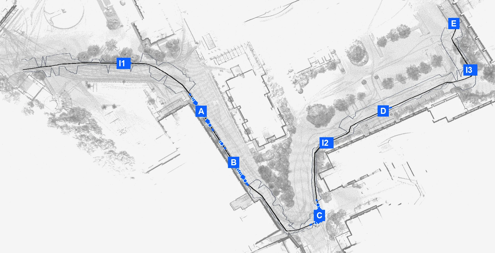
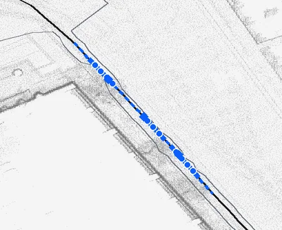
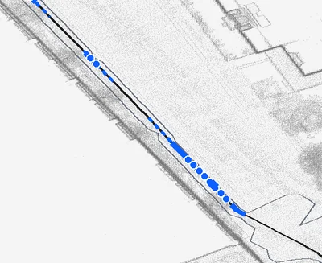
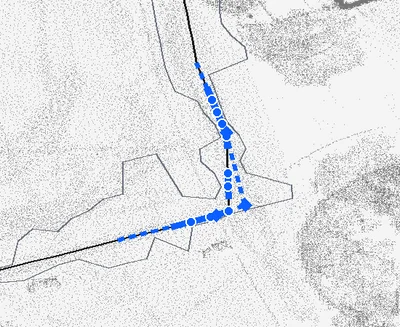
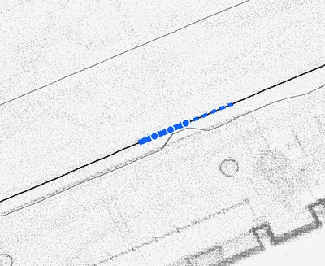
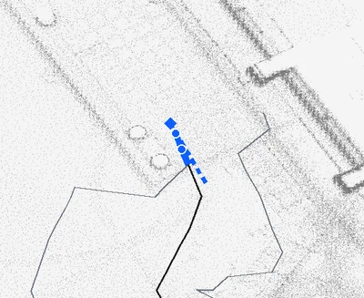

회전 반경 불일치
검사 반경은 방출 반경의 5.5배입니다.
가로로 움직여 수치와 반경을 크게 볼 수 있습니다.
전체 수치: 검사 1.375 m, 방출 0.25 m.
0727 경로의 실제 실패 위치부터 바퀴 명령, 장애물 인식, 로컬라이제이션, 맵 자산, 현장 검증까지 팀이 같은 화면에서 판단하도록 정리했습니다.
아래 여덟 항목은 기능 유무가 아니라 현재 상용 운행을 열 수 없는 이유입니다.
실제 실행 맵과 저장된 JSON을 현재 런타임 판정식, grace 0.10 m로 다시 검사했습니다.







routes/20260727_new_route_safety_band.json, routes/20260727_new_route_waypoints.json, 실행 맵 merged_0707_0725_0p20m_xyzi.pcd. 판정: src/static_livox_localization/scripts/safety_band.py.코드에 안전 로직이 있어도 최종 모터 명령이 그 로직을 반드시 통과한다는 현장 증거가 필요합니다.
가로로 움직여 현재 경로와 닫는 상태를 크게 볼 수 있습니다.
같은 명령을 검사하고 방출하지 않으면 통과 판정이 실제 바퀴 움직임을 보증하지 못합니다.
검사 반경은 방출 반경의 5.5배입니다.
가로로 움직여 수치와 반경을 크게 볼 수 있습니다.
전체 수치: 검사 1.375 m, 방출 0.25 m.
입력 (0.30, 0.50)의 별도 정수 wheel-count 재현에서 yaw가 약 0.2058로 계산됐습니다. 실제 외부 base 배포 여부는 확인되지 않았습니다.
가로로 움직여 두 막대의 수치를 크게 볼 수 있습니다.
전체 수치: 요청 0.5, 별도 재현 0.2058. 현장 적용은 미확인입니다.
탑승자 마스크, 낙차, 자동 정합은 각각 동작하지만 실패 상태를 보수적으로 묶는 현장 증거가 부족합니다.
후면 탑승자를 제외하되 실제 장애물과 낙차 신호를 지우지 않아야 합니다.
가로로 움직여 인식 흐름의 각 단계를 크게 볼 수 있습니다.
전체 흐름: Livox 포인트 → 3D 자기 몸체 마스크 → 전방 FOV와 유효성 → 장애물과 낙차 채널.
시작점에서 자동 정합되더라도 신뢰가 떨어질 때 더 약한 후보로 조용히 내려가면 안 됩니다.
가로로 움직여 정합과 안전 정지 분기를 크게 볼 수 있습니다.
전체 흐름: 시작점 시드와 Livox IMU → 스캔 대 맵 정합 → 품질 gate → 제한 주행 또는 안전 정지.
현재 0.20 m 실행 맵은 점 수를 92.75% 줄였습니다. 문제는 크기 자체보다 장비 성능과 배포 무결성을 아직 닫지 못한 점입니다.
원본은 재생성 가능한 기준 자산으로 보관하고, 실행에는 다운샘플 PCD를 쓰는 방향이 맞습니다.
NUC에서 초기 로드 시간, 메모리, 정합 지연을 측정하고 맵 해시, 버전, 서명, 롤백을 경로와 trajectory identity에 원자적으로 묶어야 합니다.
원본: /Volumes/무제/merged_0707_0725_v1/mergedmap.ply. 실행: merged_0707_0725_0p20m_xyzi.pcd. 92.75%는 점 수 기준 감소율입니다.
개별 기능이 통과해도 팀원이 같은 명령으로 같은 제품 구성을 재현하지 못하면 릴리스 근거가 되지 않습니다.
revision 9d29c99에서 1422 passed, 1 skipped, 190 subtests와 함께 확인됐습니다.
5개는 macOS /var symlink portability, 2개는 실제 clean-checkout 회귀입니다.
README의 1,179 passed 기준선도 현재 분류와 맞지 않습니다.
센서, 로컬라이제이션, 경로, safety ABI와 실제 서명된 driver를 하나의 canonical field bringup으로 엽니다.
clean clone에서 문서화된 검증 명령이 green 또는 근거 있는 BLOCKED 상태여야 합니다.
추적된 legacy 경로의 위험은 확인됐지만, 현재 외부 base가 그 경로를 실제 사용하는지는 아직 증명되지 않았습니다.
disk encryption, systemd service와 실행 user/group, /dev/uart ownership, 최소권한과 실제 NUC firewall 근거가 필요합니다.
로그 retention, encryption, quota, redaction, secure update, rollback, incident response와 현장 감사 receipt가 필요합니다.
소프트웨어 회귀 검사는 상당히 쌓였고, 현장과 물리 검증은 아직 다른 열에 남아 있습니다.
revision 9d29c99에서 추적된 저장소 경로 365개가 모두 분류되었습니다.
핵심 묶음 853개와 추가 104개가 통과했습니다.
보안 묶음 297개가 통과했습니다.
revision 9d29c99 전체 실행은 7 failed, 1422 passed, 1 skipped, 190 subtests였습니다.
라이브 23개 시나리오는 PLATFORM_UNAVAILABLE입니다.
추적된 물리 완료 결과는 0개입니다.
HIL, 비상 정지, 제동, EMC, 인간공학, 무승객 폐쇄코스 근거가 아직 승인 묶음으로 남아 있지 않습니다.
defd0d2에는 수동 개입 전 연석 방향 2.68 m 이탈, e12f9b8에는 지연된 yaw 뒤 raised edge 쪽 급회전이 기록됐습니다. 이는 승인된 qualification receipt도 아니고, “물리 관측이 전혀 없음”을 뜻하지도 않습니다.cold start, 60분과 8시간 자원·열 안정성, localization ground truth, 재정합·false lock 반복 결과가 필요합니다.
payload, 노면, 경사, 배터리 상태별 제동거리와 E-stop, 수동 takeover, 반복 내구 결과가 필요합니다.
사람·작은 물체·낙차 calibration matrix, 비·먼지·온도·ingress와 장시간 endurance 결과가 필요합니다.
PAUSED_SAFETY 상태는 도달할 수 없으며, decision.yaml은 실제 흐름에서 사용되지 않습니다. rider/caregiver 상태 설명, acknowledgement와 help escalation을 이 상태 기계에 연결해야 합니다.담당 영역과 완료 증거를 같은 순서로 묶으면 문제를 기능 목록이 아니라 릴리스 조건으로 관리할 수 있습니다.
hardware_motion_authorized: false
passenger_operation_authorized: false
campus_operation_authorized: false